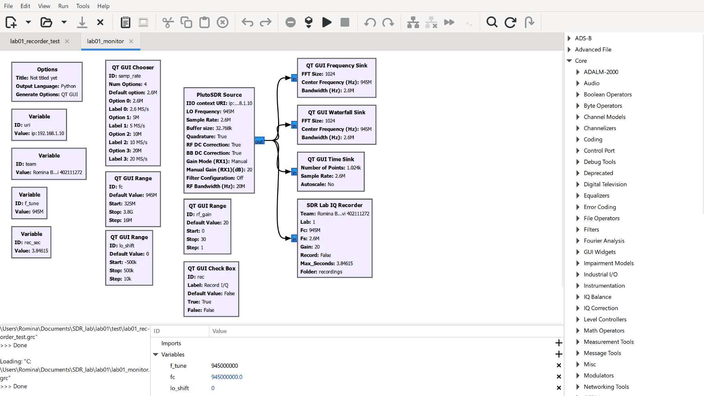

رومینا بابائی
شمارهٔ دانشجویی 402111259
از دریافت سیگنال تا ثبت نمونههای I/Q؛ فلوگراف، کد و فایلهای آزمایش در یک صفحه.
شمارهٔ دانشجویی 402111259
شمارهٔ دانشجویی 402111272
بلوک ضبط با شروع دستی، محدودیت تعداد نمونه و توقف هنگام تغییر تنظیمات.
فایل قابل ویرایش فلوگراف اصلی در GNU Radio Companion.
تصویر واقعی محیط نرمافزار با بلوکها و اتصالهای کامل.

خروجی مختلط گیرنده به سه نمایشگر و بلوک ضبط میرود. کنترلهای فرکانس، نرخ نمونهبرداری، بهره و فرمان ضبط در رابط گرافیکی تنظیم میشوند.
در حال بارگذاری کد…قالب دادهcomplex64 · I/Q float32 · 8 bytes/sample
شروع و توقفشروع با Record؛ پایان با برداشتن تیک، رسیدن به سقف، تغییر تنظیمات یا توقف فلوگراف.
ضبط بعدیپس از توقف خودکار، تیک باید برداشته و دوباره زده شود.
پیوست دستورکار، روش آزمون بلوک ضبط با یک تن مصنوعی را پیش از جلسه شرح میدهد. مراحل زیر روش بررسیاند و نتیجهٔ آزمایش انجامشده را گزارش نمیکنند.
در فلوگراف جداگانه، Signal Source با فرکانس ۱۰۰ کیلوهرتز را از طریق Throttle به بلوک ضبط وصل کنید.
در نرخ ۲٫۶ میلیون نمونه بر ثانیه و مدت یک ثانیه، حجم فایل باید دقیقاً ۲۰٬۸۰۰٬۰۰۰ بایت باشد.
تغییر فرکانس، نرخ یا بهره باید فایل را ببندد؛ شروع دوباره به برداشتن و زدن مجدد تیک نیاز دارد.